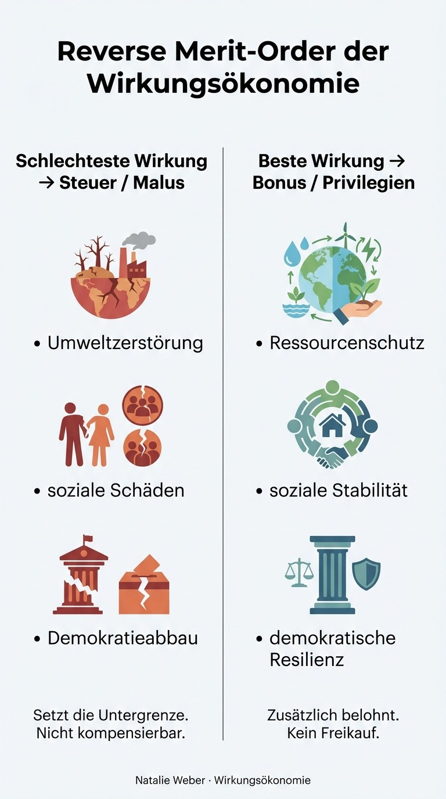

Wir diskutieren politische Entscheidungen meistens so, als gäbe es einfache Gegensätze: Wachstum oder Klimaschutz. Sicherheit oder Freiheit. Soziale Gerechtigkeit oder Wettbewerbsfähigkeit.
Diese Debatten scheitern selten an falschen Zielen. Sie scheitern daran, wie wir entscheiden.
Denn das eigentliche Problem ist nicht der Zielkonflikt. Das Problem ist, dass wir so tun, als ließen sich alle Wirkungen gegeneinander aufrechnen - ein bisschen Schaden hier, viel Nutzen dort.
Genau hier setzt die Wirkungsökonomie (WÖk) an. Mit einem einfachen, aber konsequenten Prinzip: der Reverse Merit-Order.
Vom Energiemarkt zur Entscheidungslogik
In der Energiewirtschaft beschreibt die Merit-Order, welche Kraftwerke zuerst zum Einsatz kommen: die günstigsten zuerst, die teuersten zuletzt.
Die Wirkungsökonomie dreht diese Logik bewusst um.
Nicht: Was ist politisch bequem, billig oder mehrheitsfähig?
Sondern: Was richtet den größten, nicht mehr reparierbaren Schaden an - und darf deshalb nicht Teil der Entscheidung sein?
Das ist die Reverse Merit-Order.

Was die Reverse Merit-Order konkret macht
Die Reverse Merit-Order ist kein moralisches Urteil und kein ideologisches Programm. Sie ist ein Entscheidungsfilter.
Bevor Politik verhandelt, wird sortiert.
1. Zuerst: Ausschluss des Unverantwortbaren
Entscheidungen, die - irreversible ökologische Schäden verursachen, - demokratische Grundlagen dauerhaft aushöhlen, - gesellschaftliche Substanz zerstören, werden aus dem Entscheidungsraum entfernt. Unabhängig davon, wie populär, billig oder kurzfristig nützlich sie erscheinen.
Diese Schäden dürfen nicht Teil eines Kompromisses sein. Sie lassen sich nicht „ausgleichen“.
2. Dann: Streit innerhalb eines sicheren Rahmens
Erst danach beginnt die eigentliche politische Auseinandersetzung:
Welche Lösung ist sozial fairer?
Welche verteilt Lasten gerechter?
Welche ist wirtschaftlich tragfähig?
Hier darf gestritten werden. Hier ist Demokratie stark.
Die Reverse Merit-Order beendet nicht Debatte - sie ordnet sie.
Warum sie falsche Zielkonflikte auflöst
Gegensätze wie „Arbeitsplätze gegen Klima“ oder „Sicherheit gegen Demokratie“ sind keine echten Zielkonflikte, sondern Folge falscher Verrechnung.
Was irreversible Schäden verursacht, steht nicht zur Abwägung.
Politik beginnt nicht mit dem Wünschenswerten, sondern mit dem, was wir uns nicht mehr leisten können.
Marktsteuerung statt Marktverzicht
Die Reverse Merit-Order ist keine Marktfeindlichkeit. Im Gegenteil.
Märkte funktionieren nur dann gut, wenn Preise reale Kosten widerspiegeln. Wenn Schäden nicht ausgelagert werden können - weder an die Umwelt, noch an andere Menschen, noch an die Zukunft.
Die Wirkungsökonomie setzt deshalb auf Wettbewerb innerhalb klarer Wirkungsschranken.
Wie die Reverse Merit-Order fiskalisch wirkt
Die Reverse Merit-Order ist nicht nur ein Entscheidungsprinzip, sondern auch eine klare Logik für Steuern, Abgaben und Anreize.
In der Wirkungsökonomie gilt:
Nicht der Durchschnitt der Wirkungen bestimmt den Steuersatz, sondern die schlechteste relevante Wirkung.
Negative Wirkungen können nicht durch positive ausgeglichen werden.
Man kann Umweltzerstörung nicht mit etwas Sozialem verrechnen. Man kann Demokratieabbau nicht mit Innovation kompensieren. Man kann soziale Schäden nicht freikaufen.
Die schlechteste Wirkung setzt den Malus - sie bestimmt die steuerliche Belastung.
Positive Wirkungen wirken zusätzlich, aber getrennt: Sie erzeugen Bonuswirkungen, Förderungen oder Privilegien, ohne negative Wirkungen zu neutralisieren.
Wie im Energiemarkt das teuerste Kraftwerk den Preis setzt, setzt in der Wirkungsökonomie die problematischste Wirkung den Rahmen.
Das beendet Kompensationslogik, verhindert Greenwashing und macht Verantwortung messbar.
Was das politisch verändert
Machterhalt funktioniert über Zustimmung. Reverse Merit-Order funktioniert über Verantwortung.
Populäre, aber schädliche Maßnahmen kommen gar nicht mehr auf den Tisch. Nicht aus Moral. Sondern aus Vorsorge.
Politik wird dadurch nicht schwächer, sondern ehrlicher.
Sie muss nicht mehr behaupten, alles gleichzeitig lösen zu können. Sie muss nur begründen, welche Schäden sie bewusst nicht zulässt.
Ein verkürztes Beispiel
In Krisen - etwa Pandemien - würde eine Reverse Merit-Order zuerst ausschließen:
Überlastung des Gesundheitssystems
dauerhafte Einschränkung demokratischer Rechte
irreversible Bildungs- und Kinderschäden
Erst danach wird diskutiert, welche Maßnahmen innerhalb dieses Rahmens die besten Wirkungen erzielen.
Das Ergebnis ist weder Laissez-faire noch autoritäre Übersteuerung, sondern gezielte, korrigierbare Steuerung.
Der Kern der Wirkungsökonomie
Die Wirkungsökonomie ersetzt weder Demokratie noch Märkte. Sie ersetzt etwas anderes: die Illusion, man könne alles gegeneinander aufrechnen.
Gute Entscheidungen beginnen dort, wo klar ist, was wir uns nicht mehr leisten können.
Das ist die Reverse Merit-Order.
Nicht als Dogma. Sondern als Voraussetzung dafür, dass Demokratie, Markt und Gesellschaft auch langfristig tragfähig bleiben.